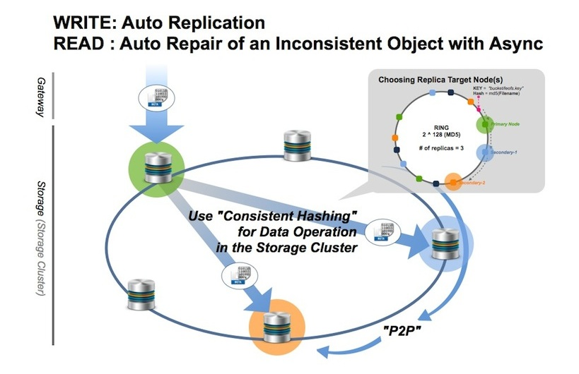
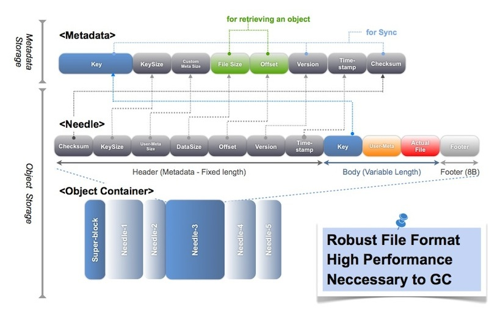
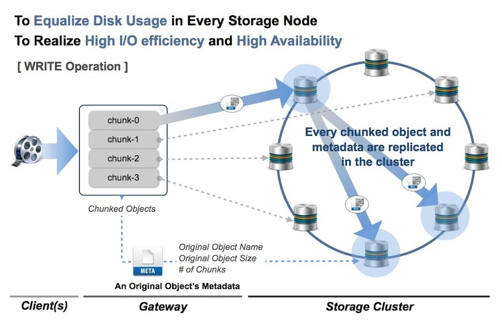

LeoStorage's Architecture¶
Fundamentals¶
LeoStorage consists of the object storage and the metadata storage, and it includes replicator and repairer realize eventual consistency.
WRITE-Request Handling¶
A LeoStorage node accepts a request from a LeoGateway node then automatically replicate an object into the LeoStorage cluster. Finally, its LeoStorage node confirms whether a stored object satisfies the consistency rule.
READ-Request Handling¶
A LeoGateway node requests a LeoStorage node; then its LeoStorage node retrieves an object from the local object-storage or a remote LeoStorage node. Finally, its LeoStorage node responds an object to its LeoGateway node. Also, its LeoStorage node checks the consistency with the asynchronous processing. Please note that LeoGateway cache settings can affect requests handling.
If its LeoStorage node finds inconsistency of an object, its node fixes the inconsistent object with the backend process. Its object eventually keeps consistency with the functions.

Data Structure¶
LeoFS’ object consists of three layers which are metadata, needle and object-container.
- LeoObjectStorage manages and stores both an object and metadata which stores as a needle.
- LeoObjectStorage's metadata-storage handles and stores attributes of an object which includes filename, size, checksum, and others, and it depends on Leveldb.
- LeoObjectStorage's object-container adopts a log structured file format, which is robust and high performance because an effect of the local file system is just a little part, and LeoStorage is necessary to remove unnecessary objects from the object containers, which is realized by the data compaction feature.

Large Object Support¶
LeoFS supports handling a large size object since v0.12. The purpose of this feature is two things:
- To equalize disk usage of each LeoStorage node.
- To realize high I/O efficiency and high availability.
WRITE-Request Handling¶
A LeoGateway node divides a large size object into plural objects, then those chunks are replicated into a LeoStorage cluster which is similar to handling small size objects, and the default chunk size is 5MB, the configuration of which can change a custom chunked object size.
READ-Request Handling¶
A LeoGateway node retrieves a metadata of a requested object, then if it's a large size object, its LeoGateway node retrieves the chunked objects in order of the fragment object number from the LeoStorage cluster. Finally, its LeoGateway node responds the objects to the client.
